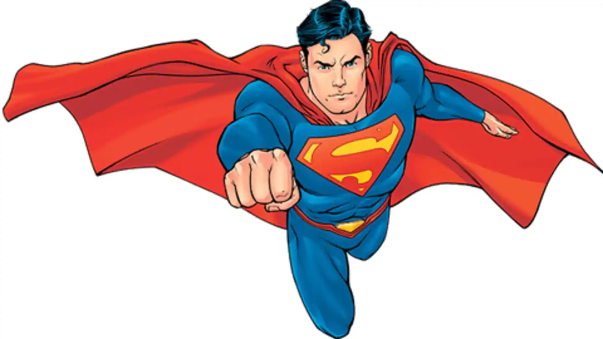

Superman is a superhero published by DC Comics since 1938. An alien named Kal-El from the destroyed planet Krypton.
He was sent to Earth and raised as Clark Kent by human foster parents, Martha and Jonathan Kent.
As an adult, Superman became the protector of Earth, working at the Daily Planet as Clark Kent alongside his partner and wife Lois Lane.
More information in Wikipedia
After the district of New Troy had been secretly shrunken down and abducted by the Collector of Worlds, Superman made a giant leap from Metropolis into outer space, catching hold of the retreating space-ship. The Collector tried to force Superman to choose between the lives of those in the city of Kandor and of New Troy, but he refused to choose, instead donning a Kryptonian suit of armour from one of the bottles and promising to protect both.[8] Defeating the Collector and returning New Troy to its original place, Superman then came out officially to the people of Metropolis as an alien and promised to remain on the side of good.
